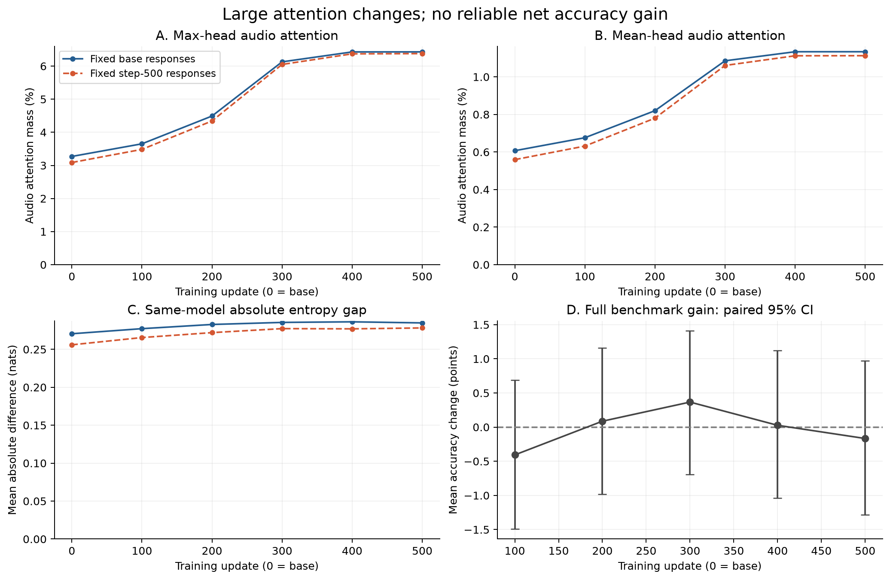
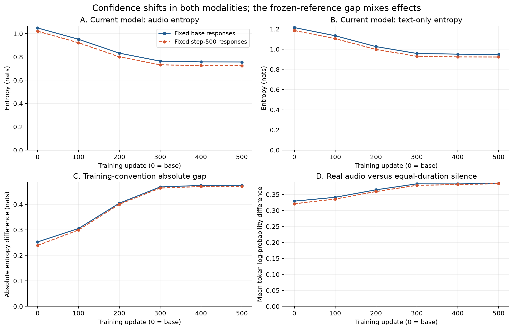
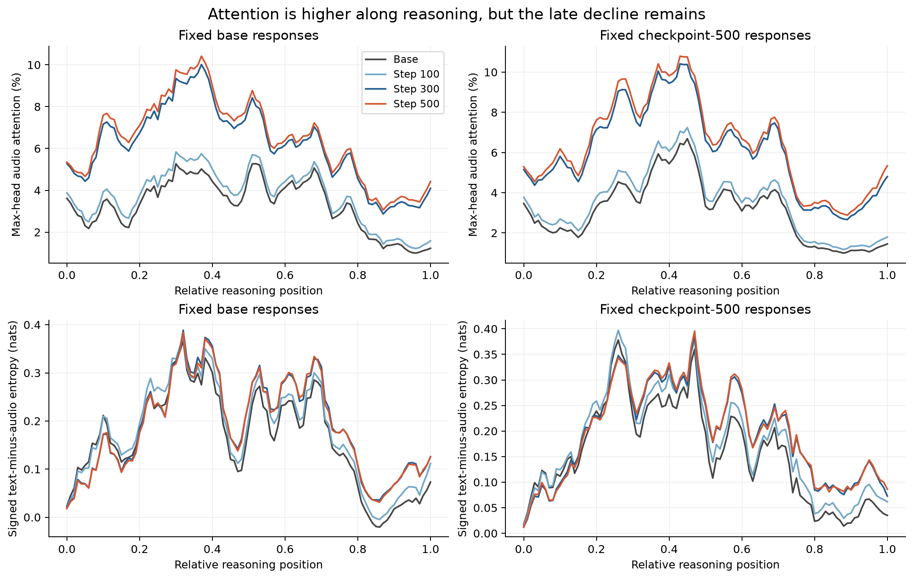
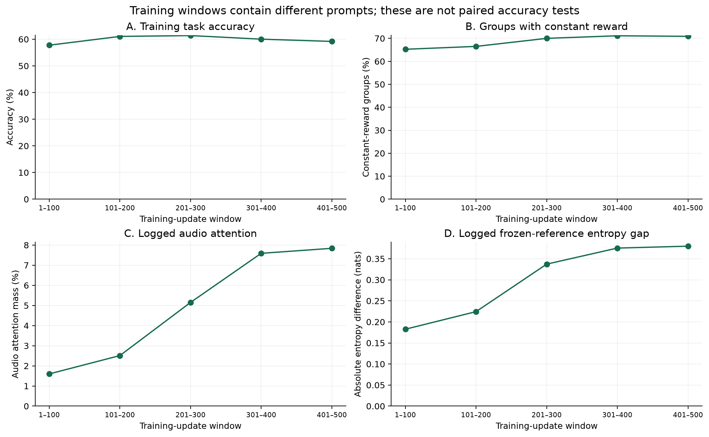
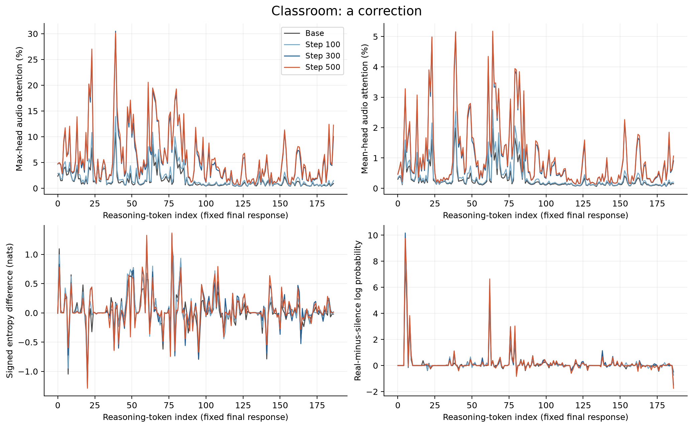
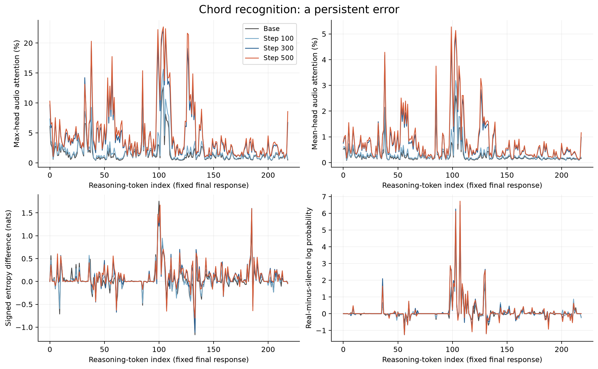
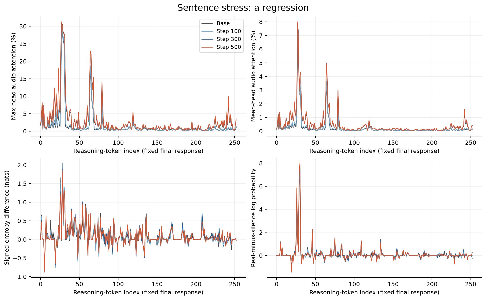

Analysis 03 · MOSS-Audio-8B-Thinking · 11 September 2026
MAPO Training Effects: Attention, Entropy & Accuracy
Training nearly doubles audio attention and changes confidence. It does not yet demonstrate a reliable accuracy gain.
Completed experiment
What was trained and compared?
500-update rank-16 MAPO
MOSS-Audio-8B-Thinking; LoRA rank 16, alpha 32, all-linear language-model targets; frozen audio encoder and aligner. Learning rate 0.000008 with cosine decay and 4% warmup; KL coefficient 0.02; gradient clipping 1.0.
Microbatch 16 × accumulation 4; 64 completions per update, eight completions per prompt group. Asynchronous rollout with token-level importance correction. Checkpoints saved every 100 updates.
Three 80-GB GPUs, separate roles
GPU 0: MOSS trainer. GPU 1: MOSS rollout server. GPU 2: Qwen3-30B-A3B consistency checker. The Qwen model supplies a reward check; it is not the model being trained or probed.
The reward combines accuracy, format, and consistency with weights 2:1:1. MAPO adds relevance reweighting and a failure-gated audio-attention loss with coefficient 0.05.
Training produced 32,000 scored completions in 4,000 prompt groups. The source-row audit found 3,992 distinct examples: async prefetch repeats the first eight rows, with newly sampled completions. This is a minor 0.2% accounting defect, not an established explanation of the result.
The adapter is active and changes model behavior. The central question is whether those changes help answer selection—not whether the model moved at all.
Matched-input evidence
Attention moves much more than accuracy
Figure 1 compares every saved checkpoint on identical questions and response tokens. Eight pre-existing diagnostic items from each benchmark give 24 items, each with a fixed base response and a fixed final-checkpoint response. Both response sources show the same qualitative result.
{kind=link}

Table 1 gives exact base-to-final values. Both max-head and mean-head audio attention increase on all 24 items under both response sources. Last-eight-layer attention also increases on all 24, supporting a change beyond a single selected head. Larger values show greater measured attention or sensitivity; they are not intrinsically “better.”
| Reasoning-token metric | Base | Step 500 | Change | Paired 95% CI |
|---|---|---|---|---|
| Max-head audio attention (%) | 3.270 | 6.429 | +3.159 | [+2.582, +3.774] |
| Mean-head audio attention (%) | 0.607 | 1.134 | +0.527 | [+0.419, +0.637] |
| Current audio entropy (nats) | 1.049 | 0.757 | -0.292 | [-0.315, -0.271] |
| Current text-only entropy (nats) | 1.215 | 0.949 | -0.266 | [-0.287, -0.246] |
| Signed same-model entropy gap (nats) | 0.166 | 0.192 | +0.026 | [+0.013, +0.040] |
| Absolute same-model entropy gap (nats) | 0.271 | 0.285 | +0.014 | [+0.004, +0.024] |
| Absolute frozen-reference gap (nats) | 0.253 | 0.474 | +0.222 | [+0.200, +0.244] |
| Real-minus-silence log probability | 0.329 | 0.385 | +0.056 | [+0.039, +0.074] |
The frozen-reference entropy gap is not a pure audio-use metric
The training-style absolute gap increases about 88% on fixed base responses, but the same-model absolute gap increases only 5%. On fixed final responses, the increases are about 97% and 9%, respectively. Figure 2 shows why: the current policy becomes lower-entropy in both audio and text-only conditions.
{kind=link}

The frozen-reference metric mixes policy drift with modality effects. The two text controls also handle audio tokens differently, so their difference cannot be attributed entirely to confidence. Real-versus-silence sensitivity does increase by 17–20%, but that does not prove the model used the correct acoustic evidence.
{kind=link}

Most internal movement occurs by updates 300–400. A late-versus-early attention ratio corrected for available context length has heterogeneous item changes: its mean-change interval crosses zero for both response sources. These data do not establish that late-reasoning attention decay has been solved.
Task-level outcome
Corrections and regressions nearly cancel
| Model | MMAU | MMAR | MMSU | Mean | Mean change | Paired 95% CI |
|---|---|---|---|---|---|---|
| Base | 73.70 | 62.60 | 71.18 | 69.16 | — | — |
| Step 100 | 73.00 | 62.50 | 70.76 | 68.75 | -0.41 | [-1.49, +0.69] |
| Step 200 | 73.90 | 62.50 | 71.34 | 69.25 | +0.09 | [-0.98, +1.16] |
| Step 300 | 73.80 | 63.10 | 71.68 | 69.53 | +0.37 | [-0.69, +1.41] |
| Step 400 | 73.10 | 63.50 | 70.96 | 69.19 | +0.03 | [-1.04, +1.12] |
| Step 500 | 73.00 | 63.00 | 70.98 | 68.99 | -0.17 | [-1.29, +0.97] |
The highest observed mean is step 300: +0.37 points, with paired 95% interval [−0.69, +1.41]. The final checkpoint is −0.17 points, interval [−1.29, +0.97]. All five intervals include zero. This is no demonstrated improvement—not proof of equivalence, harm, or overtraining.
At step 500, the matched full-benchmark comparison has 437 wrong-to-right and 450 right-to-wrong flips: MMAU 48/55, MMAR 89/85, MMSU 300/310. Normalized answer text changes on 1,195 of 7,000 items. These single-decoding-pass comparisons can include sampling variability; the fixed-token probe is what establishes an internal parameter effect.
Learning-signal audit
Many completions, little correctness contrast
| Group type | Count | Share | Correctness contrast? |
|---|---|---|---|
| All correct; constant total reward | 1787 | 44.68% | No |
| All wrong; constant total reward | 963 | 24.07% | No |
| Mixed correct/wrong; variable reward | 920 | 23.00% | Yes |
| All correct; variable consistency | 130 | 3.25% | No |
| All wrong; variable consistency | 200 | 5.00% | No |
68.75% of groups have identical total reward. Only 920 of 4,000 groups contain both correct and wrong completions; another 330 vary in consistency reward while correctness stays uniform. The nominal completion count therefore overstates how many groups distinguish good answers from bad answers.
{kind=link}

The auxiliary loss encourages more audio attention on failed sequences and floors the absolute advantage scale at 0.05. It can remain active on uniformly wrong, constant-reward groups even when their ordinary group-relative task advantage is zero. This could teach “attend more” with relatively little signal about “answer correctly.” It does not prove that auxiliary gradients dominate.
Contrasting cases
More attention accompanies all three outcomes
These cases were selected to illustrate a correction, persistent error, and regression—not to estimate their prevalence. The full-data flip counts above establish the task-level balance. Table 4 fixes the final response for its attention measurements.
| Example | Cached base answer | Saved step-500 answer | Base attention | Step-500 attention |
|---|---|---|---|---|
| Classroom: a correction | Office | Classroom | 1.578% | 6.048% |
| Chord recognition: a persistent error | A#:maj/5 | A#:maj/5 | 1.617% | 4.947% |
| Sentence stress: a regression | Affirming his past presence | Highlighting the location | 1.407% | 2.990% |
Classroom: a correction
Question. Please infer where this is Choices: Cafe Supermarket Office Classroom
Gold answer. Classroom
The saved answer corrects while audio attention increases. This is compatible with useful audio-dependent change, but does not establish that attention caused the correction.
{kind=link}

base reference response
**Analyzing the Audio and Selecting the Best Location**
Okay, the task is straightforward: pinpoint the location from the provided choices—Cafe, Supermarket, Office, or Classroom—and deliver the answer. I've got to base my answer on the audio clip, which features the distinct sound of someone writing or drawing with a pencil on paper. My auditory analysis clearly identifies this as the primary sound.
Now, I have to correlate this sound with the suggested environments. A cafe, supermarket, and classroom are all plausible settings where writing or drawing could occur, but an office is the most probable. The act of writing or drawing with a pencil is a common activity in an office setting, and the audio clip aligns perfectly with this context. Therefore, the most logical and appropriate answer is "Office."
</think>
Office
checkpoint-500 reference response
**Analyzing the Chalkboard Sounds**
Okay, the task is straightforward: pinpoint the location from the given choices—Cafe, Supermarket, Office, or Classroom—based on the audio clip provided. My process will involve identifying the sound signature and aligning it with the suggested environments.
The audio clearly features the distinct sound of chalk being written on a chalkboard. I can identify the scratchy, rhythmic strokes characteristic of chalk on a blackboard. This auditory clue is key.
Given this sound profile, the most logical setting is a Classroom. Chalkboards are traditionally employed in classrooms for teaching purposes. The other choices—Cafe, Supermarket, and Office—are highly improbable. Cafes and supermarkets don't typically involve chalkboards, and while some offices might have whiteboards, the explicit sound here is chalk on a board, aligning most strongly with an educational setting.
Thus, the answer is Classroom.
</think>
Classroom
Chord recognition: a persistent error
Question. From 6.76 to 8.45, which chord is played in the audio? Choose the correct option from the following options: Choices: E:hdim7(11)/4 A#:maj/5 A:7/1 D:min/5
Gold answer. D:min/5
The answer remains the same wrong chord despite much higher attention. More attention mass is not sufficient for fine-grained acoustic discrimination.
{kind=link}

base reference response
**Analyzing the Chord in the Given Timeframe**
Okay, the task is straightforward: pinpoint the chord played between 6.76 and 8.45 in the audio and select the correct choice from the provided options. I've been given a guitar audio clip, and my expertise in music theory and audio analysis will be key here.
First, I've identified that the audio features a guitar playing a bluesy riff. My focus is now on the chord played during the specified timeframe. I've analyzed the audio and deduced that the chord is an A# major chord with the 5th in the bass, which is represented as A#:maj/5.
Now, I'll cross-reference this with the provided choices:
- E:hdim7(11)/4
- A#:maj/5
- A:7/1
- D:min/5
The chord I've identified, A#:maj/5, corresponds directly with the second choice, A#:maj/5. Therefore, the answer is A#:maj/5.
</think>
A#:maj/5
checkpoint-500 reference response
**Analyzing the Chord in the Given Timeframe**
Okay, the task is straightforward: pinpoint the chord played between 6.76 and 8.45 in the audio and select the corresponding choice from the provided options. My process will involve identifying the chord within that specific time segment and matching it to the choices given: E:hdim7(11)/4, A#:maj/5, A:7/1, and D:min/5.
Given that the audio features an electric guitar playing a melodic solo, I need to figure out the chord utilized within that brief timeframe. From my analysis, the guitar solo employs a chord that aligns with an A# major chord moved over a fifth, which corresponds to the A#:maj/5 chord. This specific voicing implies that an A# major chord is positioned with its fifth acting as the bass note.
Therefore, the chord identified is A# major over a fifth, or A#:maj/5. Rightly so, this selection corresponds precisely with option B, A#:maj/5.
</think>
A#:maj/5
Sentence stress: a regression
Question. What is the focus of the stress in this sentence? Choices: Denying he was ever here Highlighting the location Focusing on the subject being present Affirming his past presence
Gold answer. Affirming his past presence
The saved answer changes from the reference-consistent interpretation to an incorrect location emphasis. Attention and the entropy gap increase even along this incorrect final trajectory.
{kind=link}

base reference response
**Analyzing the Speaker's Emphasis**
Okay, the task is straightforward: pinpoint the focus of the stress in the sentence "He was here earlier" and choose the correct option from the provided choices. I've got to analyze the audio clip and determine where the emphasis lies.
First, I've got to listen to the audio clip, which states, "He was here earlier." My analysis of the audio clip reveals that the speaker's emphasis is clearly on the phrase "was here." This is evident from the intonation and the way the words are spoken, with a slight increase in volume and pitch on "was here."
Now, let's break down the choices:
1. Denying he was ever here
2. Highlighting the location
3. Focusing on the subject being present
4. Affirming his past presence
The speaker is not denying anything; she is stating a fact. The emphasis is not on the location, but on the fact that the subject was present. The speaker is not highlighting the location, but the fact that the subject was present. The emphasis is on the fact that the subject was present, and the speaker is affirming this fact. Therefore, the correct answer is Affirming his past presence.
</think>
Affirming his past presence
checkpoint-500 reference response
**Analyzing the Speaker's Emphasis**
Okay, the task is straightforward: pinpoint the focus of the stress in the sentence "He was here earlier" and choose from the provided choices. My process will involve identifying the stressed word or phrase and linking that to the intended meaning.
I've identified the sentence: "He was here earlier." My assessment is that the speaker stressed the word "here." This emphasis indicates that the location is the primary point of clarification or the key piece of information the speaker wants to communicate.
Now, let's dissect the choices.
* **Denying he was ever here**: This is incorrect. The statement aims to confirm his presence in the past, not deny it.
* **Highlighting the location**: This is the correct choice because the stress on "here" clearly accentuates the point of his presence.
* **Focusing on the subject being present**: While the sentence mentions presence, the emphasis lies on where that presence occurred.
* **Affirming his past presence**: This is partially true, but it doesn't account for the primary stressed emphasis on "here."
Therefore, the stressed word "here" makes the location the key focus. So, the answer is **Highlighting the location**.
</think>
Highlighting the location
Inference and proposed work
Test objective alignment before scaling rank
Rank 16 can move this model
Attention, entropy, and real-versus-silence sensitivity change on matched trajectories. “The adapter did nothing” does not fit the measurements.
Which change improves answers?
Capacity sufficiency, auxiliary-loss balance, consistency reward, and data difficulty have not been isolated. The internal plateau alone does not identify the cause.
- Run a matched objective ablation
Compare rank-16 GRPO-only (both MAPO relevance reweighting and auxiliary loss disabled), current MAPO, and lower auxiliary weight such as 0.005–0.01. Hold initialization, prompts, rollout budget, consistency reward, and decoding fixed. The criterion is improved fixed-prompt correctness and benchmark gains—not a larger attention proxy.
- Improve informative groups per GPU-hour
Track mixed-correctness groups and use training-only evidence to tune difficulty. A fixed training-prompt probe can measure learning without requiring a new held-out split. Do not mine diagnostic benchmark examples for training selection.
- Keep the controls and exact accounting
Record current audio/text entropy alongside the frozen-reference metric; repair the duplicate-prefetch rows before matched runs. Rank 32 remains a testable hypothesis, not an established fix.
Reproducibility and limits
What these measurements can establish
- Matched trajectories: 24 items × two response sources × six model states = 288 records. Token hashes and next-token prediction alignment are checked. The two trajectories per item are not independent samples.
- Entropy definitions: the signed same-model gap is current text-only entropy minus current real-audio entropy. The absolute gap takes the tokenwise absolute value before averaging; it is not the absolute value of the mean signed gap. True text-only inputs remove audio prompt tokens.
- Audio intervention: real audio and same-duration silence use identical input token IDs. This controls duration and prompt length, but silence can be out of distribution and is not proof of correct grounding.
- Diagnostic scope: eight examples per benchmark, reused from the earlier seed-17 diagnostic. This is not a new benchmark estimate. Teacher-forced results do not reproduce each checkpoint’s on-policy reasoning distribution.
- Uncertainty: diagnostic intervals resample paired items, not tokens. Benchmark intervals resample paired items within each benchmark. Neither captures variability across training seeds; all results come from one training run.
Training job 638478; checkpoint evaluation 638479; diagnostic job 640422. The diagnostic completed on one A100-40GB in 5m59s with 19.21 GiB peak tensor allocation.
Download the numeric evidence snapshot: all checkpoint summaries and paired intervals, per-item means, training-group audit, position profiles, and three example traces. Raw audio, model weights, and unrelated training logs are not published.
Canonical source files
exp/moss_audio/analysis/checkpoint-effect-638478exp/moss_audio/eval/moss-mapo-r16-500-hardmix/comparison-to-base/comparison_to_checkpoints.jsonrecipes/moss_audio/configs/mapo_rank16_async_80gb_avqa_500_hardmix.yamlrecipes/moss_audio/configs/mapo_v25_objective.yaml
Rebuild with python src/mapo/documentation/html/scripts/build_mapo_training_effects.py. Use --refresh-data to re-export experiment evidence before rebuilding. The MAPO checkout is canonical; the Pages repository is a deployment mirror.